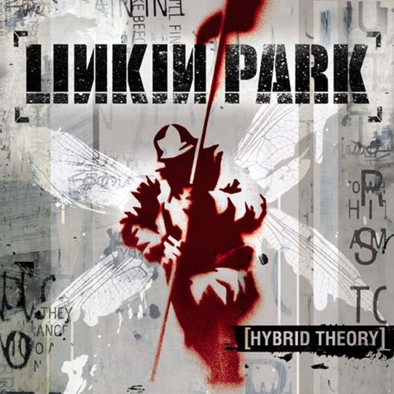
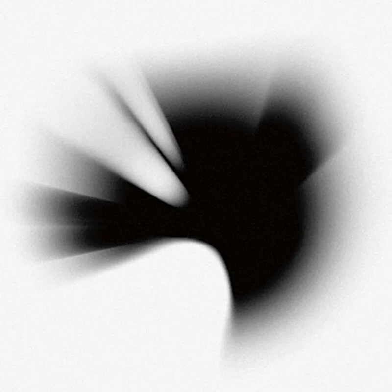
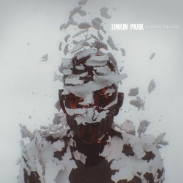
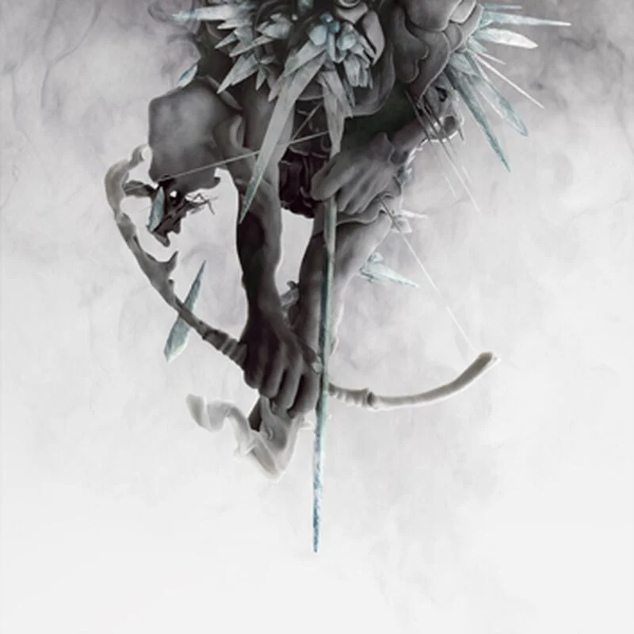

Diskografie Linkin Park je důkazem jejich neustálého hudebního vývoje a odvahy experimentovat. Od tvrdého nu-metalu na začátku kariéry přes elektronické a alternativní vlivy až po jemnější a velmi osobní tvorbu v pozdějších letech – každé album představuje jinou etapu v historii kapely.
První album Linkin Park a zároveň to, které je nejvíc proslavilo. Hudba je hodně tvrdá, ale zároveň chytlavá. Najdeme tu rap Mikea Shinody a silný zpěv Chestera Benningtona. Texty jsou hodně naštvané a o problémech a pocitech, které zažívá hodně mladých lidí.
Nejznámější písně: In the End, Crawling, One Step Closer
Meteora je hodně podobná předchozímu albu, ale je víc vyzrálá. Písničky jsou propracovanější a často dost emotivní. Právě z tohoto alba pochází jeden z jejich největších hitů – Numb.
Nejznámější písně: Numb, Faint, Somewhere I Belong

Kapela chtěla zkusit něco jiného. Hudba není tolik tvrdá a víc se soustředí na melodie a texty. Některé písně jsou osobní, jiné se dotýkají témat jako válka nebo politika.
Nejznámější písně: What I’ve Done, Given Up, Shadow of the Day

Tohle album je hodně experimentální a nemusí sednout každému. Je tu spousta elektroniky, mezihry a zvláštní atmosféra. Kapela se snažila udělat něco jiného než dřív.
Nejznámější písně: The Catalyst, Waiting for the End
Na tomto albu se Linkin Park snažili spojit elektroniku a tvrdší kytary. Výsledkem jsou písničky, které zní moderně a dobře se poslouchají. Album je hodně energické.
Nejznámější písně: Burn It Down, Castle of Glass
Po elektronickém období se kapela vrátila k tvrdšímu zvuku. Písně jsou hlasité, rychlé a hodně kytarové. Je to asi jejich nejtvrdší album po dlouhé době.
Nejznámější písně: Guilty All the Same, Until It’s Gone
Poslední album s Chesterem Benningtonem. Hudba je jemnější a spíš popová, ale texty jsou hodně osobní a smutné. Po Chesterově smrti získalo album ještě větší význam.
Nejznámější písně: Heavy, One More Light
Album kombinuje tvrdší kytary, elektroniku a moderní zvuk, který připomíná starší Linkin Park, ale zároveň působí svěže. Velkou roli má opět Mike Shinoda, který se stará o zpěv, rap i produkci. Také se na něm podílela nová zpěvačka Emily Armstrong
Nejznámější písně: Emptiness Machine, Heavy Is the Crown, Two Faced